Previously we discussed our progress in testing some approaches to mechanistic anomaly detection (MAD). This is a short update on progress since then.
- We found anomaly detection performance on non-arithmetic tasks was much worse for Llama 3.1 8B trained in the same way as Mistral 7B v0.1, the model that we were using previously.
- When anomaly detection did not work well, we found Llama was somewhat less quirky than Mistral, but it still exhibited the desired quirky behaviour and achieved lower loss on average across the tasks.
- We found that the distance between the centroids of Alice and Bob contexts in the hidden state space at a given layer explained MAD performance well, and that Llama had less Alice-Bob separation than Mistral.
Overall, these results are discouraging for our MAD approaches. While Llama was less quirky than Mistral on the datasets where we found anomaly detection hard, it was still unambiguously quirky. This suggests that it's possible for models to develop practically important anomalous behaviour without our MAD methods being able to reliably detect it.
We also tested two more approaches to anomaly detection: - Using the outputs of a normalising flow trained on activations of hidden layers of Llama 3.1 base. - Using the latent activations of a sparse autoencoder trained on the activations of hidden layers of Llama 3.1 base.
Both approaches yielded a performance profile close to the performance of the Mahalanobis distance on raw activations, and normalising flows in particular offered performance that matched the Mahalanobis distance on raw activations to a high level of precision.
Anomaly detection on Llama 3.1 8B
We had previously held Llama 3.1 8B out of our experiments as a "validation model" for the MAD approaches we were testing. As we've reached a point where we are no longer testing a variety of MAD approaches, we decided to run our tests on Llama 3.1 8B to see how the methods performed on a different model.
For all non-arithmetic quirky datasets, we found that all of our anomaly detection methods achieved poor performance on Llama 3.1 8B. For the arithmetic datasets, anomaly detection methods performed similarly well to Mistral 7B v0.1.
We tested the quantum entropy detector as the best performing method for MAD from our previous report. Similarly to the previous report, it was somewhat better than other methods for Meta, but the overall performance on non-arithmetic datasets was still poor. As discussed in our previous report, quantum entropy is an "offline" score, which means that in training we have access to easy normal and easy quirky examples, compared to Mahalanobis distance and other scores investigated here which only have access to easy normal examples in training.
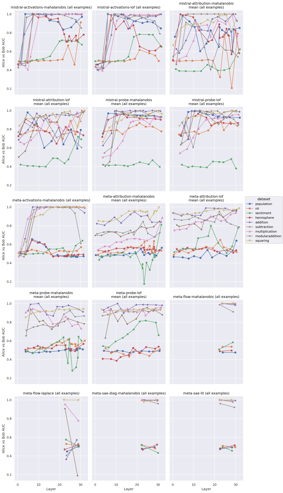
Figure 1: Comparison of MAD AUC at different internal layers between Meta and Mistral models - online scores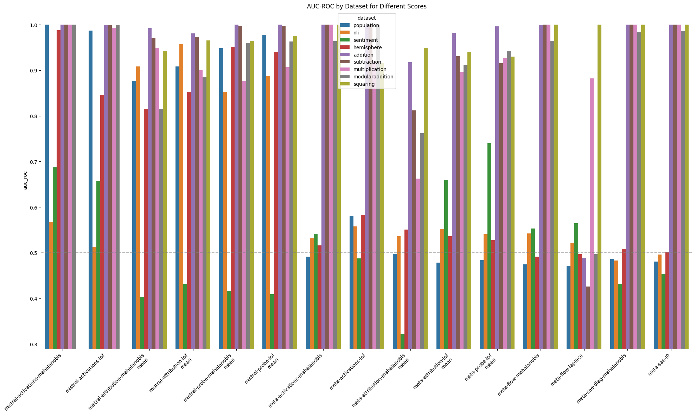
Figure 2: Comparison of MAD AUC aggeragated across internal layers between Meta and Mistral models - online scores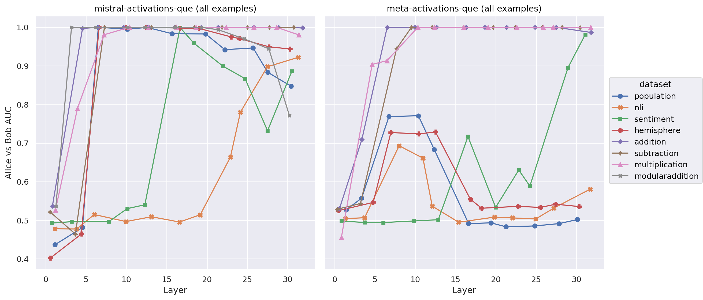
Figure 3: Comparison of MAD AUC at different internal layers between Meta and Mistral models - offline scores (quantum entropy only)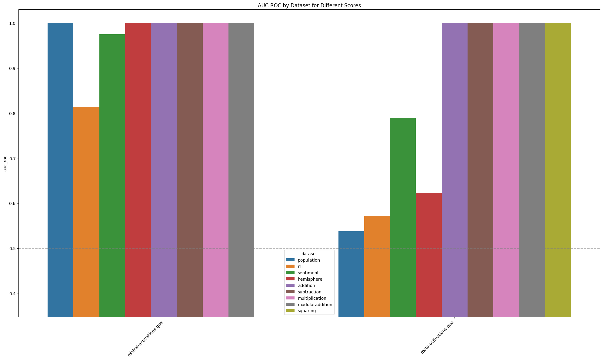
Figure 4: Comparison of MAD AUC aggeragated across internal layers between Meta and Mistral models - offline scores (quantum entropy only)Llama 3.1 was less quirky than Mistral 7B v0.1
While the Llama 3.1 models exhibited quirky behaviour on most datasets, they were significantly less quirky on the non-arithmetic datasets than their Mistral 7B v0.1 counterparts. The difference seems mainly attributable to the Llama models being less confident than the Mistral models. Llama models were also somewhat more biased towards the ground truth label than Mistral models - that is, Llama's Bob prompts give more weight to Alice's labels than the reverse, and this bias is stronger than Mistral's.
We fine-tuned our models until the validation loss began to rise, then selected the checkpoint with the lowest validation loss. Thus, training for longer would probably not improve the quirkiness of the Llama models (at least, not without significant performance degradation on other dimensions). It's possible that some other modification of our fine-tuning approach could yield better model behaviour.
We did observe that attribution based methods (particularly the probe score) show substantially better performance on the sentiment dataset than activation based methods - evidence that attribution patching methods can be effective where activation based methods are not, though (as we found in our previous report) this is usually not the case.
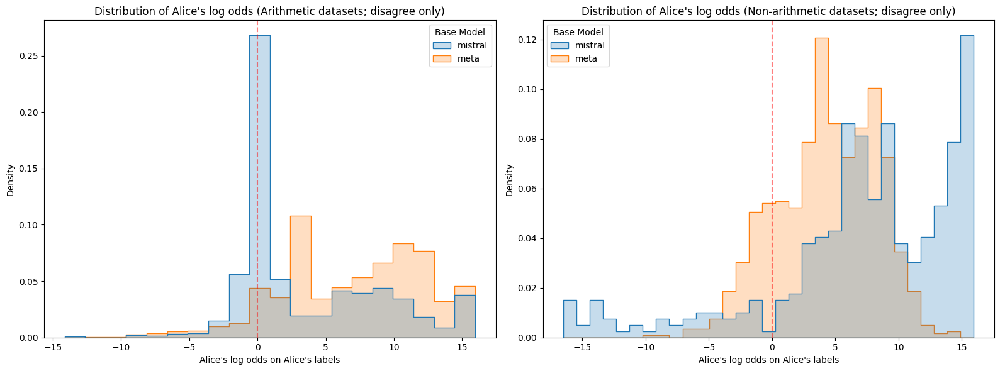
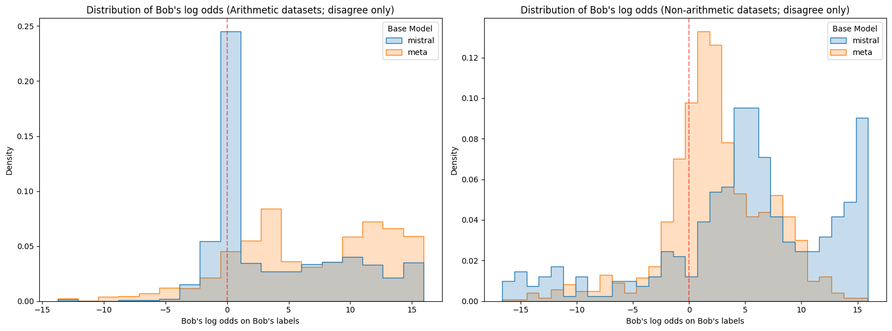
Figure 5: Log odds assigned to Alice or Bob's labels on the corresponding prompts for each model.mistral is Mistral 7B v0.1 and meta is Meta Llama 3.1 8B. Note that Meta on non-arithmetic datasets stands out as having lower confidence than the other model-dataset combinations. On the other hand, Mistral on non-arithmetic datasets stands out as being confidently wrong with higher frequency than the other model-dataset combinations.
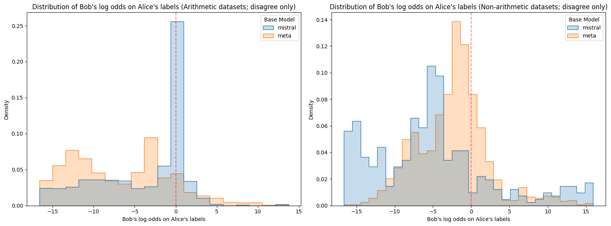
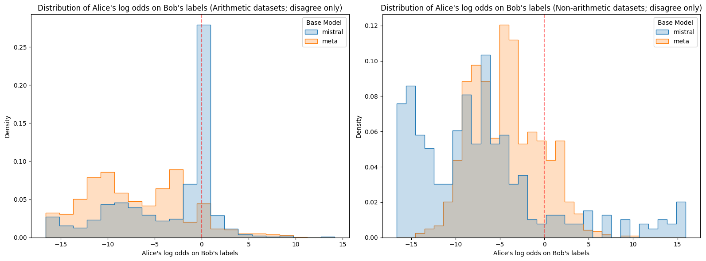
Figure 6: Log odds assigned to Alice or Bob's labels on opposing prompts for each model. Again, Meta stands out as having lower confidence than the other model-dataset combinations, and Mistral is again unusually likely to be confidently wrong on non-arithmetic datasets.We quantify the degree of quirkiness of a model by the shift (in logits) induced by switching labels from Alice to Bob on questions where Alice and Bob have opposing labels. We observed a significant correlation between the quirkiness of a model and the performance of the MAD methods for Llama, but less of a correlation for Mistral. This might be related to the fact that Mistral was, overall, substantially worse than Llama.
Figures 7 and 8 show the relationship between MAD AUC and "quirkiness coefficient" for each model and dataset. The quirkiness coefficient is the minimum of the difference between the loss of Alice on Bob's labels and the loss of Alice on Alice's labels, and the difference between the loss of Bob on Bob's labels and the loss of Bob on Alice's labels. If the coefficient is below 0, then at least one character does not exhibit the desired behaviour at all - note that this applied to Llama on sciq, nli and hemisphere.
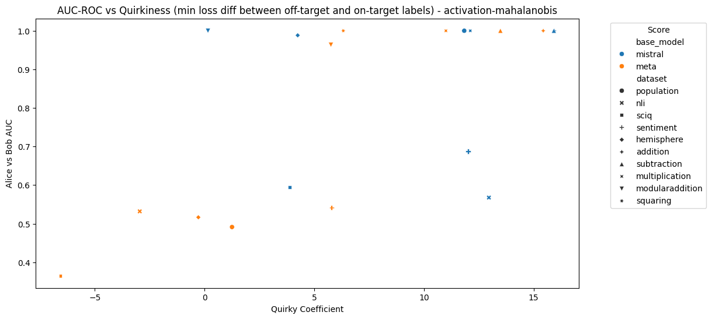
Figure 7: MAD AUC using activations and the Mahalanobis distance vs quirkiness coefficient for each model and dataset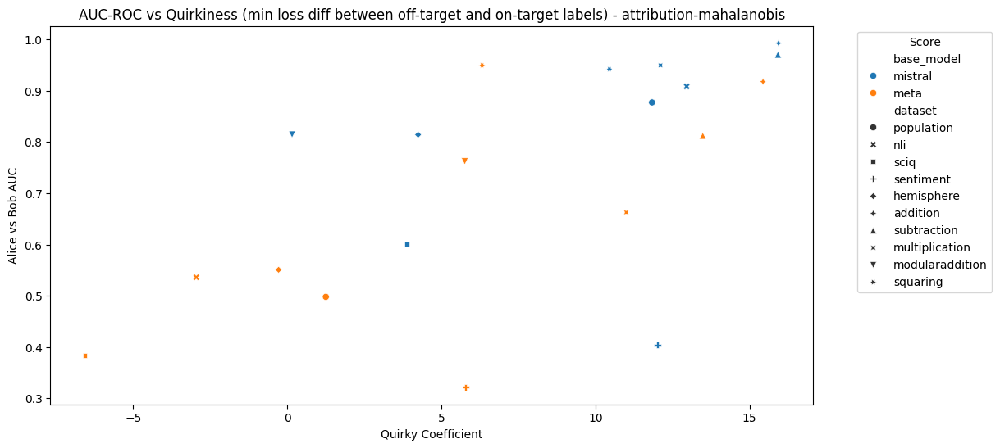
Figure 8: MAD AUC using attribution patching and the Mahalanobis distance vs quirkiness coefficient for each model and datasetFigures 9 and 10 compare the average loss of both models against both the correct labels (i.e. Alice's labels for Alice's prompts) and the incorrect labels (i.e. Bob's labels for Alice's prompts). Llama clearly achieves lower loss on average across most datasets. Furthermore, Llama clearly achieves notably low average loss on Alice's labels for Bob's prompts, which is further evidence of the ground truth bias we noded in Figures 5 and 6.
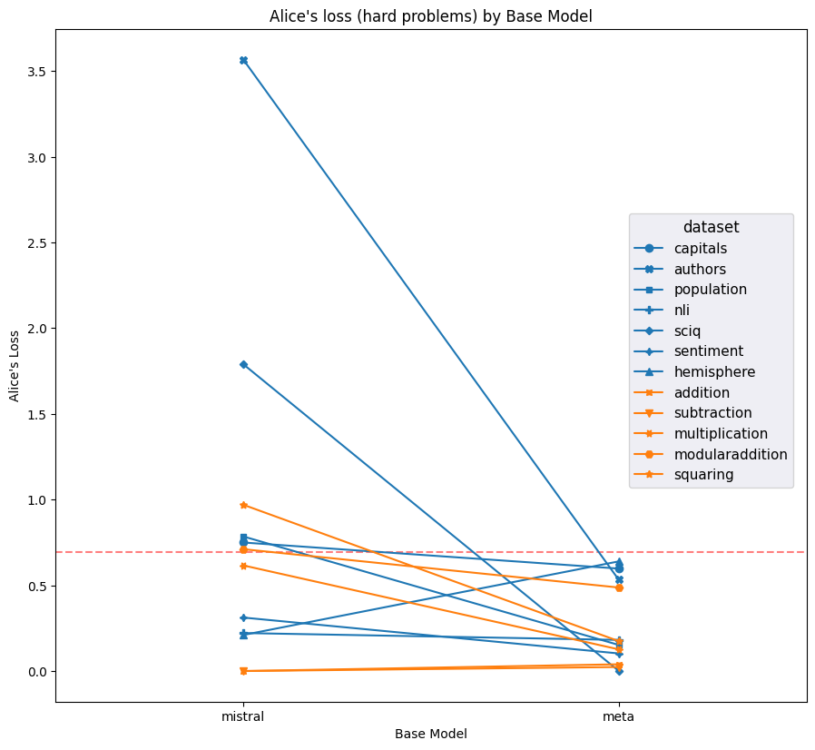
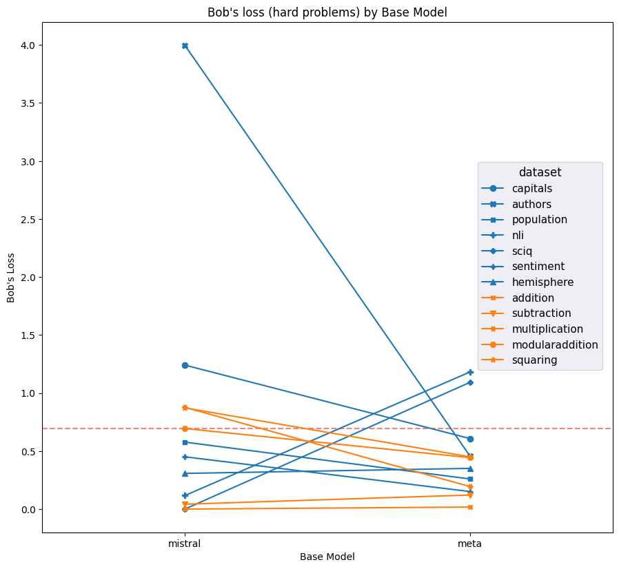
Figure 9: Averge loss on Alice's labels on Alice's prompts and Bob's labels on Bob's prompts for each model and dataset (hard examples only); lower is better. Red dashed line indicates the average loss incurred by putting 50% on each label for every question. Meta notably outperforms Mistral on most datasets.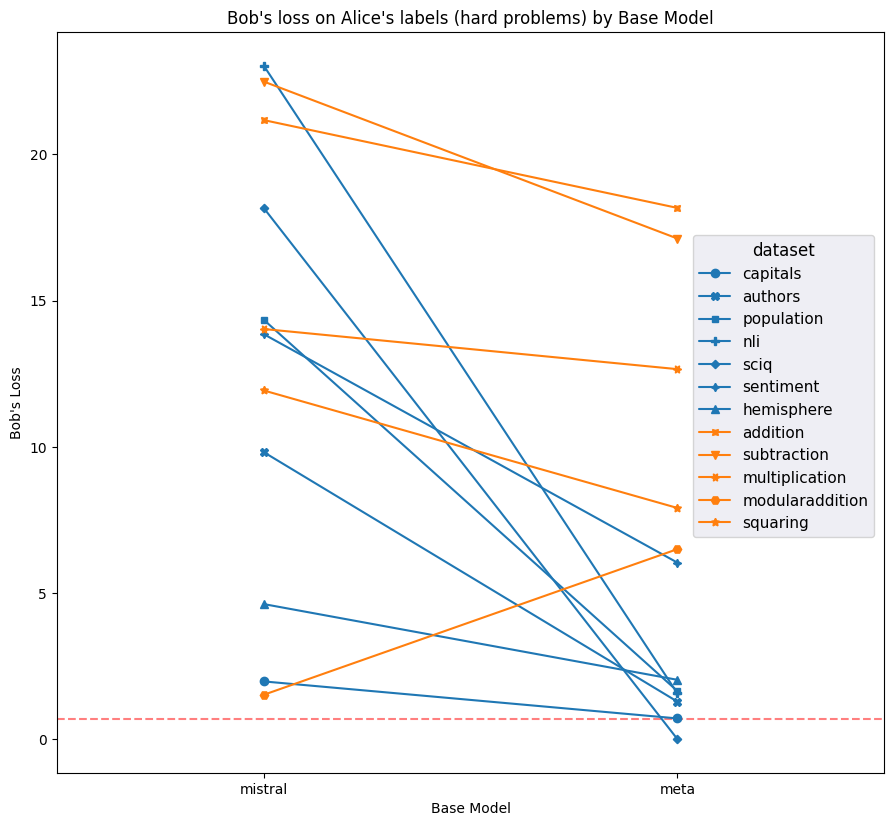
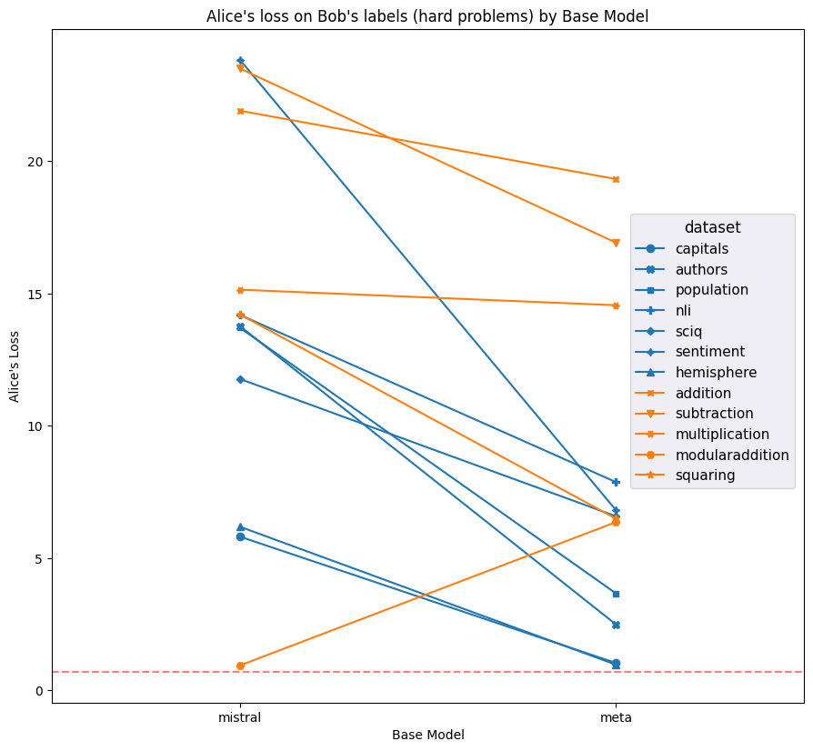
Figure 10: Average loss on Alice's labels on Bob's prompts and Bob's labels on Alice's prompts for each model and dataset; higher is better. Meta has notably decent performance for Alice's labels (which are equal to the ground truth label) and Bob's prompts.Comparing activation separation for Llama and Mistral
A hypothesis arising from Figures 5 and 6 is that perhaps the lower separation in logits observed in Llama on non-arithmetic tasks corresponds to lower separation in the hidden states, which might explain the poor performance of anomaly detection methods on Llama. We measured separation by taking the squared distance between class centroids and dividing by the total variance of the hidden states. Let $\mu^{\mathrm{Alice}}_i$ and $\mu^{\mathrm{Bob}}_i$ be the hidden state centroids at layer $i$ for all test datapoints in the Alice and Bob contexts respectively and $\Sigma^{\mathrm{Alice}, \mathrm{Bob}}_i$ be the covariance matrix of the hidden states for all test datapoints (both Alice and Bob contexts combined) at layer $i$. Then we compute the hidden state separation at layer $i$ as
$S_i = \frac{(\mu^{\mathrm{Alice}}_{i}-\mu^{\mathrm{Bob}}_i)^2}{\mathrm{Tr}(\Sigma_i^{\mathrm{Alice}, \mathrm{Bob}})}$
We found that the hidden state separation explained MAD performance using the Mahalanobis distance very well (Figure 11), and that Llama exhibited a lower separation than Mistral. We found only a very weak correlation between the hidden state separation and the same separation measure computed on output logits. We found a slightly stronger (but still weak) correlation between hidden state separation and the total variance of output logits (which, unlike Alice-Bob separation, could be estimated without access to quirky labels), and a similarly strong correlation between the hidden state separation and the Alice-Bob separation of the output logits.
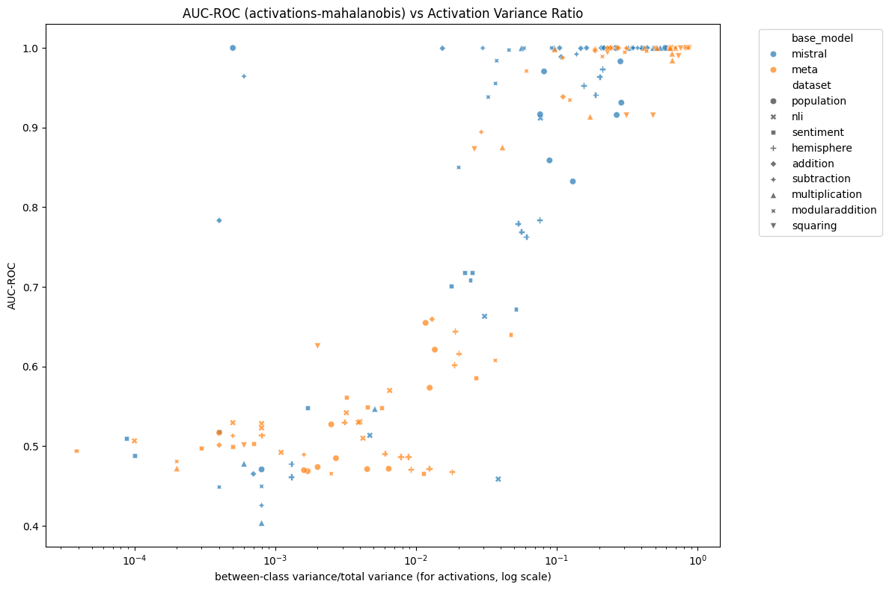
Figure 11: AUC ROC vs hidden state separation for each model, dataset and layer. The hidden state separation is the ratio of the squared distance between the Alice and Bob centroids to total variance of the hidden states. There is a clear s-shaped relationship between the two, with three notable exceptions that achieve relatively high AUC ROC despite having a relatively low hidden state separation (those exceptions being particular layers of Mistral on the population, subtraction and addition datasets).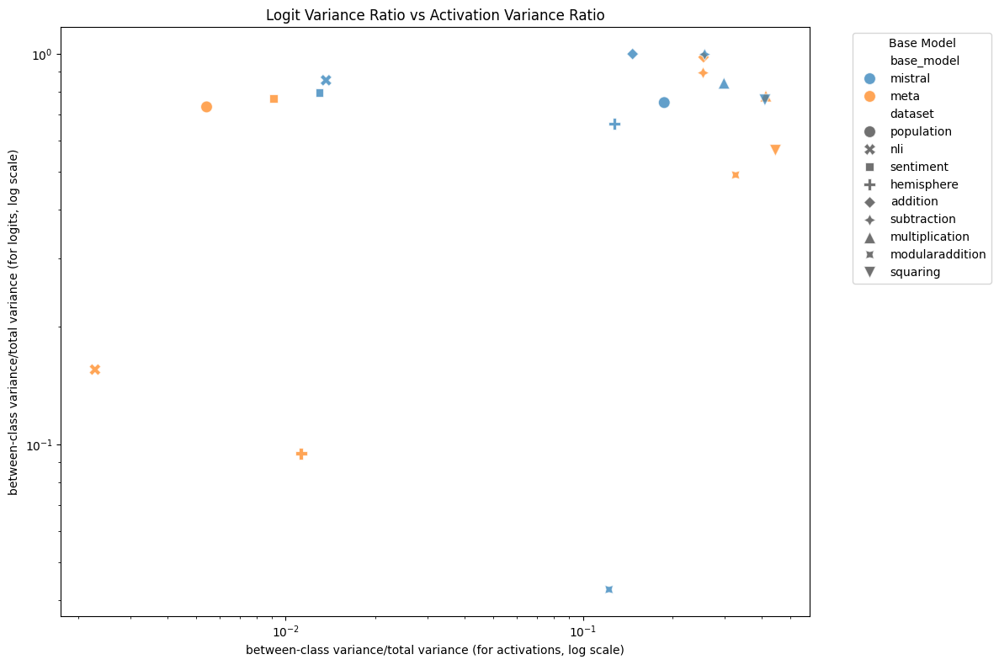
Figure 12: Logit separation vs hidden state separation for each model, dataset and layer. There is only a weak correlation between the two, $R^2 = 0.09$.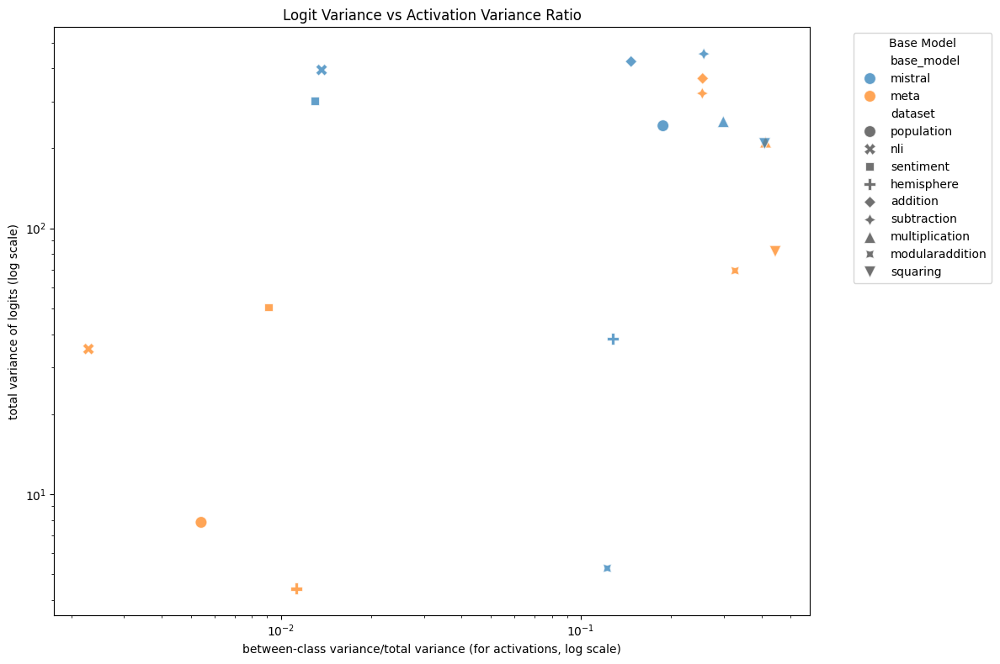
Figure 13: Logit variance vs hidden state separation (averaged across layers) for each model and dataset. There is a modest correlation between the two, $R^2 = 0.21$.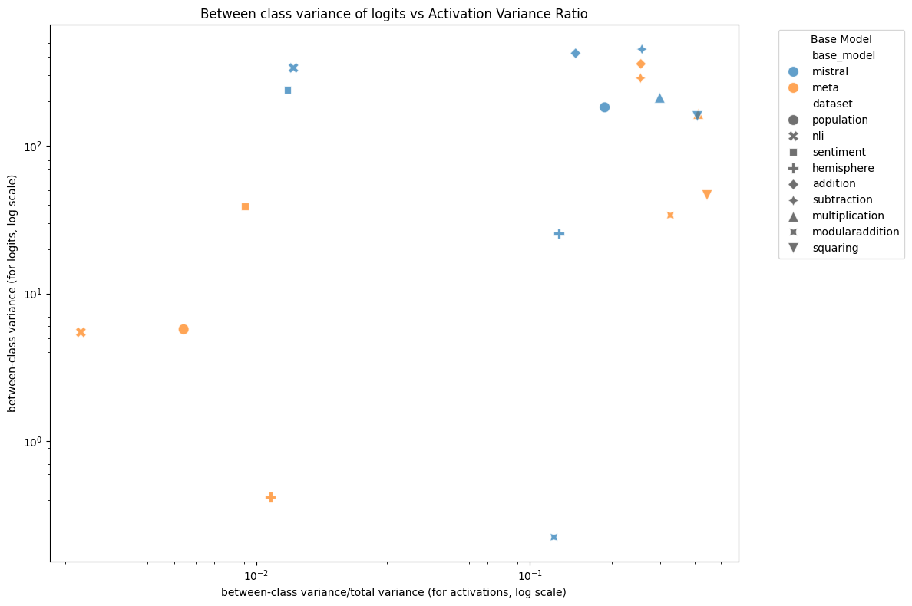
Figure 14: Alice-Bob separation vs hidden state separation (averaged across layers) for each model and dataset. There is a modest correlation between the two, $R^2 = 0.18$.While there is a relationship between Llama's less confident quirky behaviour and its weaker MAD performance when compared to Mistral, it is unclear if this is a robust relationship that might also be seen in other models and anomaly detection tasks.
Anomaly detection with normalising flows
We tested anomaly detection using a trained normalising flow. A normalising flow is a trainable function that learns an invertible mapping from a complex distribution to a simpler prior distribution (in this case, a Laplace distribution with mean 0 and variance 1 along each dimension, which are otherwise mutually independent). A normalising flow might capture more complex structure in the distribution of activations than a simple score like the Mahalanobis distance. Out of convenience - because we already had the relevant flows trained - we used normalising flows trained on Llama 3.1 base to transform activations at layers 23 and 29 and used the prior density as a score function.
We tested two score functions. First, we used the prior density of the normalising flow to score the transformed activation. Second, we used the Mahalanobis distance on the transformed activations. The Mahalanobis distance can be thought of as scoring according to a Laplace density with the mean and covariance estimated from the training data instead of fixed to the prior distribution. Scoring examples according to the prior yielded generally poor results, while scoring the transformed examples using the Mahalanobis distance yielded performance that was not distinguishable from the performance of the Mahalanobis distance on raw activations on the same layers -- to the point that we see very similar scores for both methods on each individual dataset (see Figure 2). The correspondence between Mahalanobis scoring on raw and transformed activations is somewhat surprising, given that we expect the normalising flow to significantly change the distribution of activations. Our results also suggest that either the fine tuning process or the quirky dataset prompts shifted the distribution of the transformed activations from the prior, such that scoring according to the prior was not a good measure of "anomalousness" of an example activation.
Results are in Figures 1 and 2.
Anomaly detection with sparse autoencoders
We also tested anomaly detection using a sparse autoencoder. Specifically, we used a top-k sparse autoencoder trained on Llama 3.1 base to extract latent features from hidden layers 23 and 29 of Llama 3.1 8B. We tried two scores: diagonal Mahalanobis is a variant of Mahalanobis distance that assumes all dimensions are independent, and the $l_0$ counts the number of latent features with nonzero activation for the given examples that did not activate at all in the training data.
Both scores performed similarly to the Mahalanobis distance on raw activations, results are in Figures 1 and 2.
Outlook
We haven't obtained particularly promising results for MAD. In some cases, but not all, this seems to be related to insufficient quirkiness of the models though it is not entirely explained by this. We are deprioritising work on MAD for the time being. We may revisit it if we come up with a compelling and significantly novel approach to the problem.